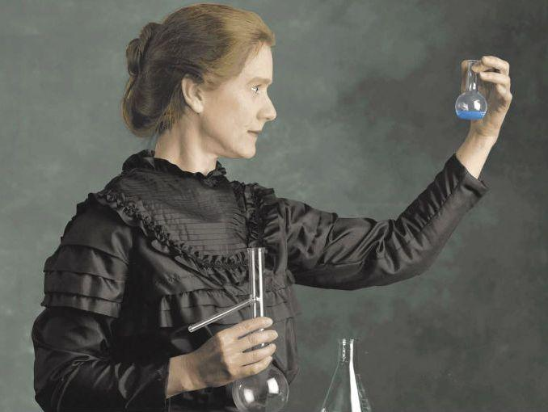

Marie Skłodowska Curie nació el 7 de noviembre de 1867 en Varsovia, Polonia. Fue una física y química pionera en el estudio de la radiactividad.
En 1891 se trasladó a París para estudiar en la Sorbona. Allí conoció a Pierre Curie, con quien se casó y colaboró en investigaciones científicas.
En 1903 recibió el Premio Nobel de Física, junto a Pierre Curie y Henri Becquerel. En 1911 obtuvo el Premio Nobel de Química por el descubrimiento del polonio y el radio.
Falleció el 4 de julio de 1934 a causa de una anemia aplásica, relacionada con su exposición prolongada a la radiación.